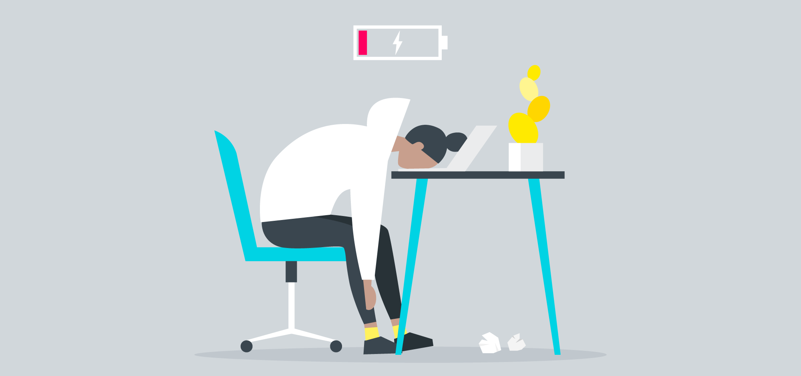

Welcome To My Website!
| Nama: | |
| Email: | |
| Jenis Kelamin: | Laki-lakiPerempuan |
| Kelas: | Kom A Kom B Kom C |
| Tanggal Lahir: | |
| Agama: | |
| Alamat: | |
| Kritik & Saran: | |
Tugas 2 : Form
Burnout Awareness

Sindrom Burnout diperkenalkan pertama kali pada tahun 1980 oleh psikoanalis terkemuka Amerika Serikat yakni Freudenberger. Meski sudah diperkenalkan sejak 48 tahun yang lalu, burnout belum dikenal dan dimengerti dengan baik oleh sebagian besar masyarakat dunia modern.
Burnout ialah kelelahan berlebihan secara fisik, mental dan emosi akibat stres yang berlebihan dan berkepanjangan. Ketika kita mengalami satu stres dan aktivitas pekerjaan yang berlebihan kemudian dibebani oleh stres lain lagi dan tuntutan baru lagi secara naluriah kita akan berusaha memenuhi semua tuntutan tersebut dan kemudian dibebani oleh jadwal pekerjaan dan juga beban lain dan jika hal tersebut terjadi berkepanjangan maka stres tersebut dapat menyerap energi fisik dan emosi hingga mental kita secara perlahan.
Apa yang menyebabkan seseorang mengalami burnout?

Ekonomi : Stres akibat permasalahan ekonomi yang semakin meningkat pada era modern menghasilkan manusia modern yang akan bekerja keras untuk memenuhi tuntutan ekonomi sehingga mengesampingkan kebutuhan untuk beristirahat atau mengambil libur.
Lingkungan Pekerjaan: jika lingkungan pekerjaan begitu kompetitif, rekan kerja yang kurang fleksibel, mekanisme kerja yang tinggi hingga ketidakpastian posisi di pekerjaan disebutkan menjadi salah satu faktor sindrom burnout.
Kehidupan sosial: Kehidupan sosial meliputi hubungan ditengah keluarga, pertemanan hingga masyarakat secara luas. Hubungan keluarga yang tak harmonis atau tidak hangat, hubungan yang kurang terbuka dengan teman akrab ditambah lagi kehidupan di era modern dimana manusia lebih terpaku kepada sosial media dan gadget sehingga kurang berkomunikasi dengan teman di sekitar.
Sindrom burnout yang tidak diselesaikan dengan baik bisa mengarah kepada depresi, gangguan cemas hingga prilaku percobaan bunuh diri.
Gejala Fisik
- Mudah lelah
- Mudah terserang flu
- Sakit kepala
- Gangguan pola tidur dan makan
Gejala Emosi
- Pesimis
- Mudah menyerah
- Sensitif
- Agresif
Bagaimana menjaga agar stres tidak menjadi sindrom burnout?
jeda pada kehidupan teknologi, jika kamu kelelahan hindarilah kebiasaan berseluncur di dunia sosial media, hindari kebiasaan duduk didepan televisi dan komputer.
Kembalikan sisi kreatif kamu, ingat kembali hobi kamu. Jika kamu masih bingung apa yang ingin dilakukan, ambilah jeda untuk berlibur, lebih dekat dengan alam menurut penelitian sangat baik bagi kesehatan fisik dan emosi.
Berikan waktu untuk relaksasi, olahraga dan tidur yang cukup dapat membantu otot-otot kamu yang tegang akibat stress yang berlebihan. Yoga, meditasi, pilates hingga lari dapat membantu kamu rileks dan mendapatkan kualitas tidur yang baik.
Makanlah makanan yang sehat dan rendah gula karena akan membantu tubuh kamu untuk rileks karena berpengaruh pada kadar hormon stres (kortisol).
Source:
Artikel Surya Husadha Academy
College Student of Universitas Sumatera Utara
You can send me a message : nehasabila62@gmail.com
© Neha Sabila, 2021